Control Circuit 2026 › Tutorial › Chapter 7
Each and every component, wire, terminal and resource in an electrical circuit should be uniquely identified. In Control Circuit all components carry a Tag: the uniquely identifying name of that item, and the thing assembly and purchasing information is attached to.
The MAIN element of a component, for example a switch, relay or lamp, generally holds the purchasing data. Control Circuit has a number of tools geared towards keeping Tags unique, and towards cross-referencing the MAIN element with its associated sub-elements: Normally Open (NO), Normally Closed (NC) and Auxiliary (AUX).
How Tag numbers and names are determined is a matter for your own house standard and preferences. They can be assigned by hand and locked, or generated automatically using standard conventions, which is where we start.
In its simplest form, we have our small example circuit and we choose Project › Auto Number Symbols… (Alt+A).
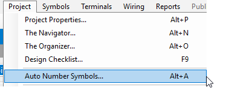
The form opens with its blank default layout, awaiting some choices.
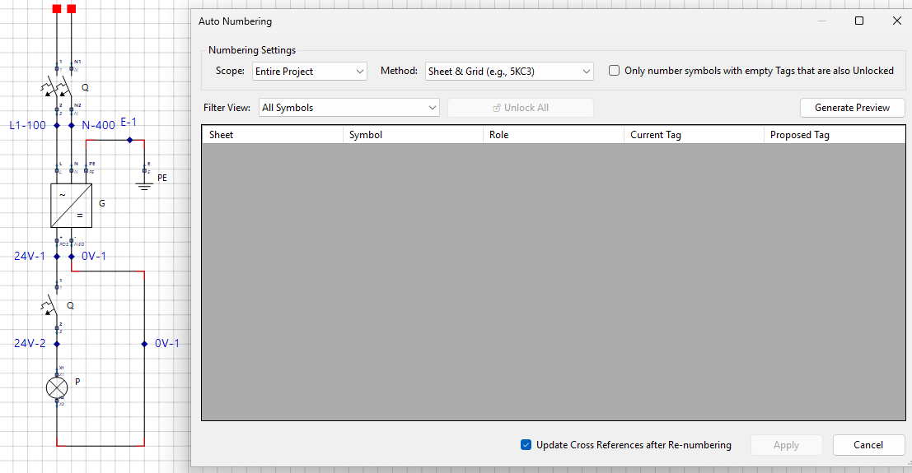
Right off the bat, just tap Generate Preview with the default settings untouched.
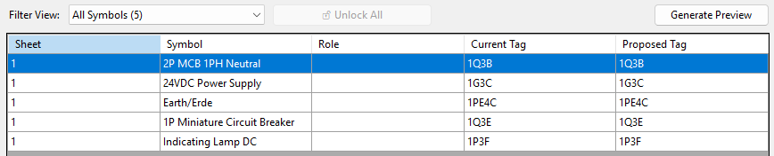
Press Apply to write the new Tags back onto the symbols. You will then be asked whether to save: Auto Numbering has changed a sheet, and Allow Pending Edits is turned off. Yes saves now, No leaves the changes pending. Choose Yes.
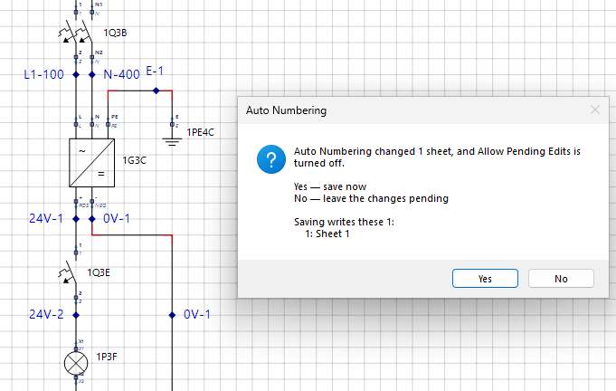
Select any symbol now and its Properties panel shows the Tag that was applied.
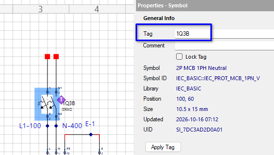
You may assign your own Tag and lock it in: type the Tag, press Apply Tag and tick Lock Tag. The numbering tool will then skip over it. Locking is also useful when you return to a design after a couple of years, want to insert a new symbol, and must not disturb the Tags already assigned.
Back in the Auto Numbering form we have a few options to play with. First, the Scope: we can number the whole project, or go incrementally, one sheet at a time with Active Sheet.
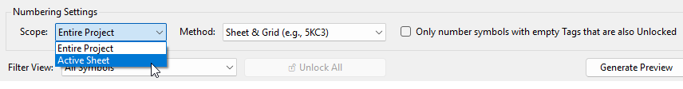
The Method drop down offers numbering schemes to suit the most common conventions.
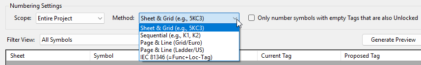
The Filter View narrows the list to the views you will use most. A full project renumber can involve thousands of symbols, so being able to filter them matters. Duplicate Tags and Locked Symbols are handy for tidying up, and To Renumber shows just what the run would change.
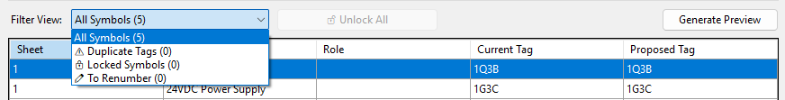
However you view the list, you can override a proposed Tag at any time by editing its cell. The usual ways to edit apply (F2, a slow second click, and so on), or right-click and choose Edit Tag.
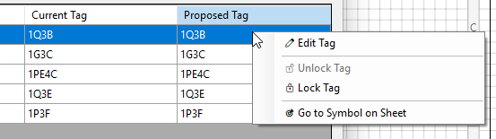
The same menu locks and unlocks a Tag. Go to Symbol on Sheet closes the Auto Numbering form and takes you straight to that symbol.
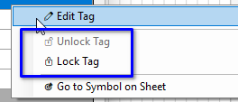
After a sheet or project wide numbering run, links between MAIN elements and their NO, NC and AUX sub-elements will most likely exist. Leave Update Cross References after Re-numbering ticked (it is by default) so a full cross reference update is done for good measure.
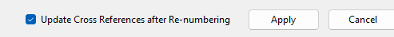
Typically a Tag belongs to a MAIN element, and a good example is a relay. The main part of the symbol is the coil, with its A1 and A2 connections, while its contacts 3/4 may be found on another sheet of the circuit. A large contactor may have eight NO and NC contacts spread around. For a push-button and lamp combination, the lamp would be an AUX element, and it too may be located elsewhere.
For that reason we need a way to link a MAIN element to its NO, NC and AUX elements, using the Tag as the primary connection, so that if the Tag changes the sub-elements follow, and so that the sheet reference mapping exists for the Contact Tables and counter-references to be printed.
All of these relationships are defined as Contact Roles. The MAIN element is the parent: it holds the Contact Table. The sub-elements are the children, and they carry the counter-references.
Put a relay coil and two contacts on the sheet.
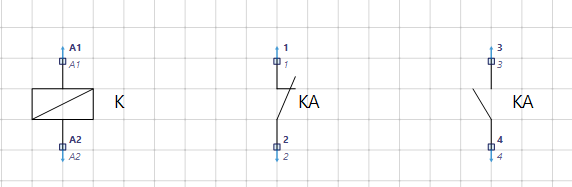
If we run Auto Numbering straight away, only the coil is picked up and offered a new Tag. The contacts are not picked up: they are not linked to a MAIN element yet, so there is nothing for them to inherit. Once they are linked, every later numbering run carries them along with their coil.
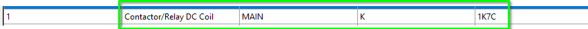
Because Update Cross References was ticked, the contacts now show that they do not know whom they belong to, and the relay coil displays no Contact Table, because until now it is not aware of any sub-elements.
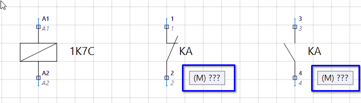
Select a contact and press Browse Parent Coils… in the Cross Reference section of its Properties panel.
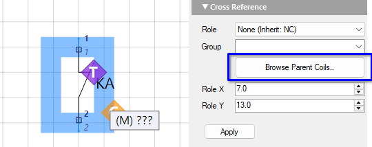
For our simple example the dialog is not very exciting, but once you have hundreds or thousands of MAIN elements these tools become very handy. The list shows every available MAIN element and what it already has attached, and you can search for coils by Tag.
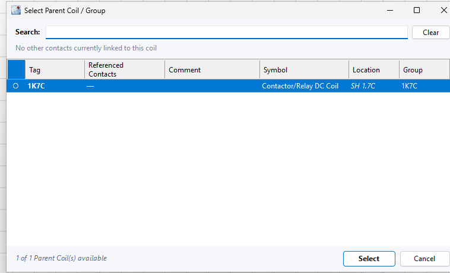
The small circle in the first column is empty when the coil has no sub-element assigned yet. Click that column header to sort the coils by it; every column header sorts. If you try to assign a contact whose pins, for example 3/4, are already assigned to the selected coil, you will be warned.
After choosing the MAIN coil you must press Apply.
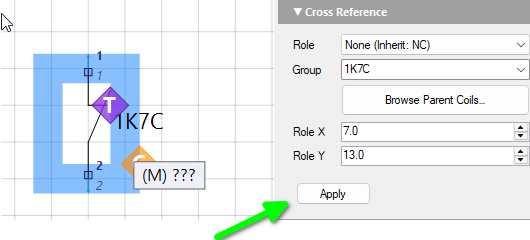
Assign the second contact likewise. The contacts take the coil’s Tag as soon as you press Apply, but the Contact Table and counter-references still need a cross reference run.
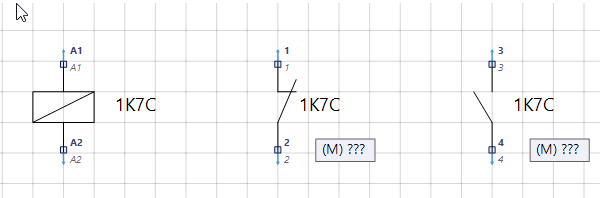
All the Tags are assigned, so we do not need Auto Numbering this time. We only need a cross reference run: choose Project › Update Symbol/Cross References (Alt+R), and press OK when it finishes.
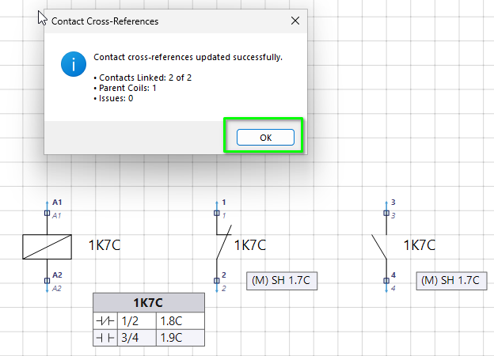
If (when!) you need to move the Contact Table, marked by the M diamond, use the Role X and Role Y values to reposition it, then press Apply.
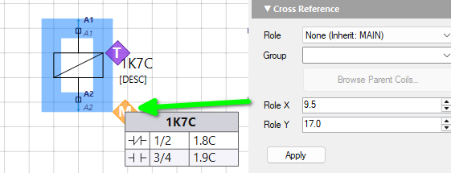
There is one thing to be aware of. By default the Tag of the MAIN element is the source of the Group name, and the Group name is what binds every element together. Change the Tag by hand, say to BOB, then run a cross reference update: BOB propagates to the contacts, but 1K7C remains the Group name and the link. That is deliberate. The link survives a rename, so nothing comes adrift.
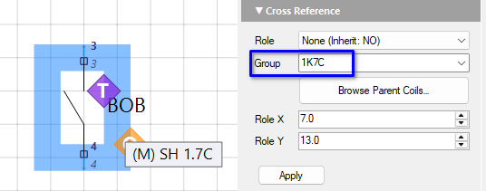
You can of course change a Group name by hand, but the engine cannot then resolve it to the sub-elements, so the next cross reference run shows a list of issues to alert you.
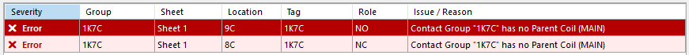
Double-click a row to jump to that element. Then either use the Group drop down to select a Group, or use Browse Parent Coils to re-attach it to the MAIN element you want.
In the Project Properties, the Drawing tab has a Contact Tables size adjustment that scales the text of the contact tables and counter-references. Use it to suit your sheet paper size and the way your circuit is presented.
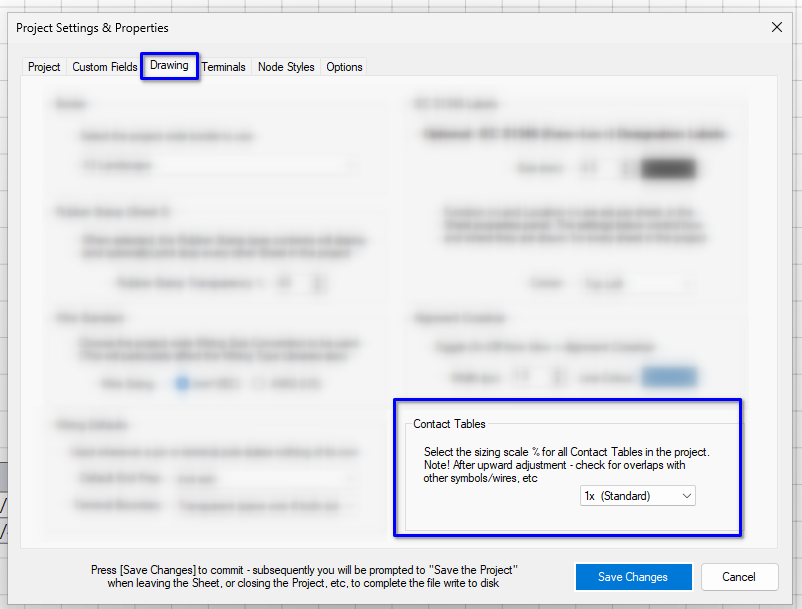
Control Circuit is all about getting around easily. Whether you are editing, in Presentation Mode, or in the Web Portal and Smart PDF outputs, click a contact reference to move between the MAIN element and its sub-elements. In the editor, right-click the reference you want, tap the text, and off you go.
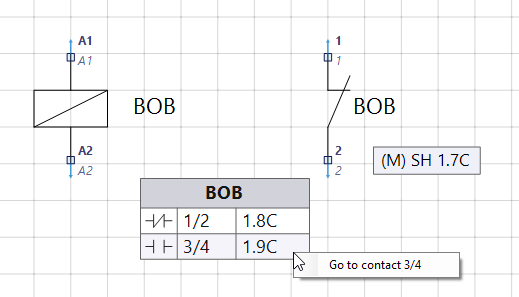
Component data can be assigned to any symbol, MAIN or otherwise. Typically we assign it to MAIN elements, but for flexibility we are not restricted, and instead there is an Exclude from BoM option. With it, design and purchasing options are fully supported in the editor and in all reports and outputs.
Select the relay coil, then expand the Component Data section of its Properties panel.
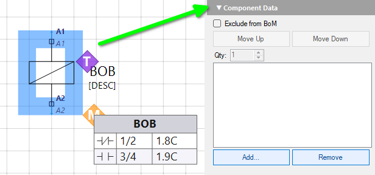
Tap Add… to open the Select Component dialog. Choose the database (it is STARTER by default), type relay in Search, scroll to the part you want, for example the OMRON G2R series, and press Select Component.
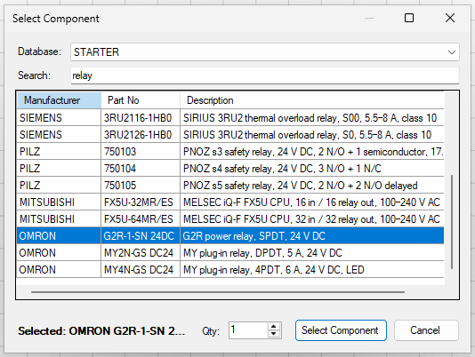
Once added, select the component in the list to change its Quantity directly, move it up or down the list if you have added more than one, or remove it completely.
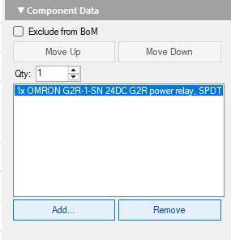
In the next chapter we look at the basic features of the Symbol Editor, and at how Tags are added, configured and given their Contact Role in the first place.